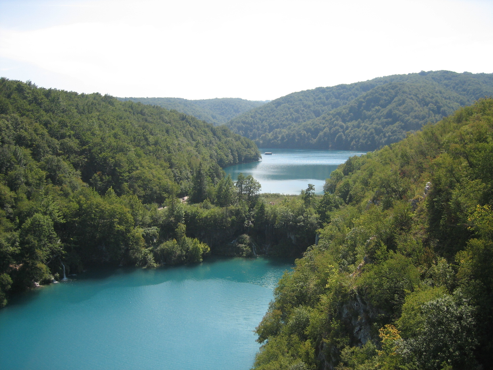

Un premier diaporama avec photos de plage
Première façon de faire, sur les images directement je mets un onclick...
Dans la balise img, je mets cet attribut : ...


2- Un 2nd diaporama...
Ce second diaporama est fait avec une fonction anonyme dans un écouteur d'évènement dans les scripts en bas de page.
document.getElementById('btnDiapo2').addEventListener('click', function() {
document.getElementById('imgDiapo2').src ='img/piscine2.jpg';
document.getElementById('imgDiapo2').alt ='La piscine est belle';
})
3- Un 3ème diaporama...
Avec une boucle switch dans une fonction.
function tourneImages() {
var getImage = document.getElementById ('imgDiapo3').getAttribute('src')
console.log(getImage); // le console.log
switch(getImage) {
case 'img/3.jpg' : //
document.getElementById('imgDiapo3').src = 'img/4.jpg'
break;
}
switch(getImage) {
case 'img/4.jpg' : //
document.getElementById('imgDiapo3').src = 'img/5.jpg'
break;
}
switch(getImage) {
case 'img/5.jpg' : //
document.getElementById('imgDiapo3').src = 'img/6.jpg'
break;
}
switch(getImage) {
case 'img/6.jpg' : //
document.getElementById('imgDiapo3').src = 'img/3.jpg'
break;
}
} // fin de tourneImages
